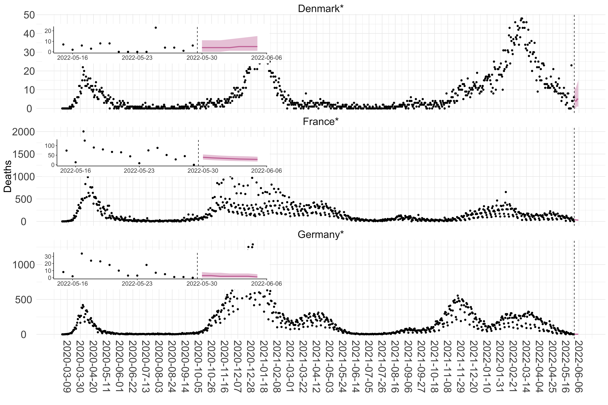
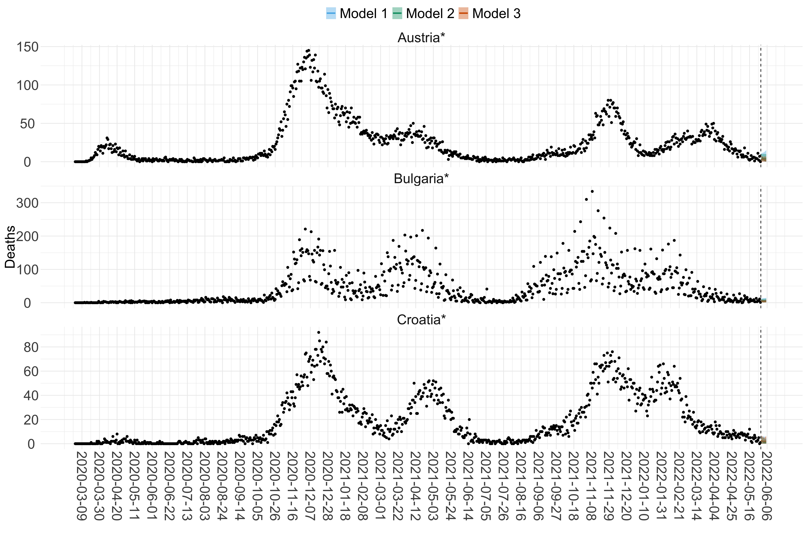
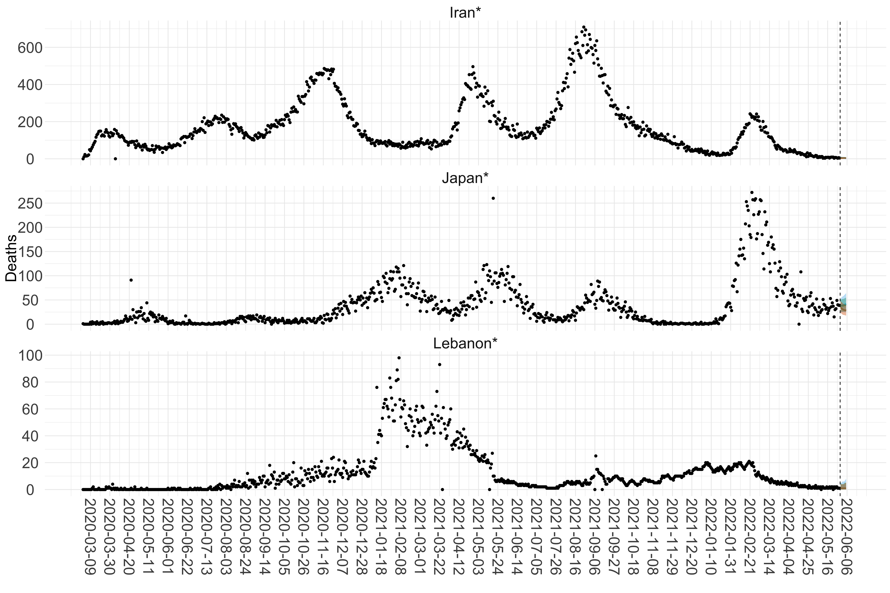
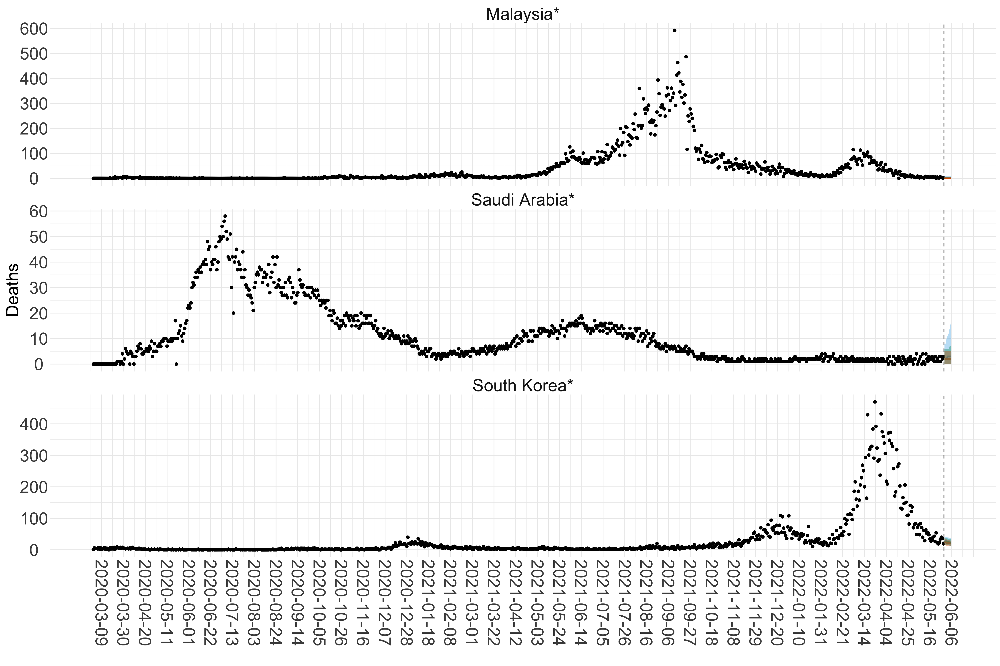

Short-term forecasts of COVID-19 deaths in multiple countries
Introduction
As of 5th October 2020, more than 34,000,000 cases of COVID-19 have been reported across the world, with more than 1,000,000 deaths (1).
This weekly report presents forecasts of the reported number of deaths in the week ahead and analysis of case reporting trends (case ascertainment) for 72 countries with active transmission.
The accuracy of these forecasts vary with the quality of surveillance and reporting in each country. We use the reported number of deaths due to COVID-19 to make these short-term forecasts as these are likely more reliable and stable over time than reported cases. In countries with poor reporting of deaths, these forecasts will likely represent an under-estimate while the forecasts for countries with few deaths might be unreliable.
Note that the results presented in this report do not explicitly model the various interventions and control efforts put in place by countries. Our estimates of transmissibility reflect the epidemiological situation at the time of the infection of COVID-19 fatalities. Therefore, the impact of controls on estimated transmissibility will be quantifiable with a delay between transmission and death.
For short-term forecasts in low-and-middle-income countries using models explicitly accounting for interventions, see here. For similar analyses published by the Imperial College COVID-19 response team for European countries see here. A detailed model for the United States of America published by Imperial College COVID-19 response team is available here. The United States of America has therefore been excluded from the analysis presented in this report and is not included in the results presented in the section on North & Central America.
 Figure 1. (A) The reported number of deaths due to COVID-19 in Africa, Asia, Europe, North & Central America, and South America. (B) The number of countries with active transmission (at least 100 deaths reported, and at least ten deaths observed in each of the past two weeks) in Africa, Asia, Europe, North & Central America, and South America.
Figure 1. (A) The reported number of deaths due to COVID-19 in Africa, Asia, Europe, North & Central America, and South America. (B) The number of countries with active transmission (at least 100 deaths reported, and at least ten deaths observed in each of the past two weeks) in Africa, Asia, Europe, North & Central America, and South America.
Objectives and Caveats
The main objective in this report is to produce forecasts of the number of deaths in the week ahead for each country with active transmission.
We define a country as having active transmission if at least 100 deaths have been reported in a country so far, and at least ten deaths were observed in the country in each of the past two weeks. For the week beginning 5th October 2020, the number of countries/regions included based on these thresholds is 72.
We forecast the number of potential deaths as the reporting of deaths is likely to be more reliable and stable over time than the reporting of cases.
As we are forecasting deaths, the latest estimates of transmissibility reflect the epidemiological situation at the time of the infection of COVID-19 fatalities. Therefore, the impact of controls on estimated transmissibility will be quantifiable with a delay between transmission and death.
A secondary objective of this report is to analyse case ascertainment per country. As well as forecasting ahead, we use the number of reported deaths and of cases reported with a delay (delay from reporting to deaths, see Case Ascertainment method) to analyse the reporting trends per country. If the reporting of cases and deaths were perfect, and the delay between reporting and death is known, the ratio of deaths to delayed cases would equal the Case Fatality Ratio (CFR).
In this analysis, key assumptions are:
- The mean underlying CFR is 1.38% (95% Credible Interval (1.23 - 1.53)) (2),
- The delay from a case being reported to death follows a gamma distribution with mean 10 days, and standard deviation 2 days.
- All deaths due to COVID-19 have been reported in each country.
Projections and Effective Reproduction Number Estimates
Projections
Current and past forecasts
Note: The projections and estimates of \(R_t\) assume a constant reporting of death. That is, even if deaths are not under-reported, we assume a constant reporting rate over time. This assumption does not always hold.
Europe





Figure 2. Reported daily deaths and current forecasts based on the ensemble model. For each European country with active transmission (see Methods), we plot the observed incidence of deaths (black dots). Forecasts for the week ahead are shown in red (median and 95% CrI). Vertical dashed line shows the start of the week (Monday). Projections for countries marked with a * are based on an unweighted ensemble of three models (Models 1, 2 and 3). Results from individual models are shown in the section Methods.
Asia


Figure 3. Reported daily deaths and current forecasts based on the ensemble model. For each country in Asia with active transmission (see Methods), we plot the observed incidence of deaths (black dots). Forecasts for the week ahead are shown in red (median and 95% CrI). Vertical dashed line shows the start of the week (Monday). Projections for countries marked with a * are based on an unweighted ensemble of three models (Models 1, 2 and 3, see Methods).
Africa
 Figure 4. Reported daily deaths and current forecasts based on the ensemble model. For each country in Africa with active transmission (see Methods), we plot the observed incidence of deaths (black dots). Forecasts for the week ahead are shown in red (median and 95% CrI). Vertical dashed line shows the start of the week (Monday). Projections for countries marked with a * are based on an unweighted ensemble of three models (Models 1, 2 and 3, see Methods).
Figure 4. Reported daily deaths and current forecasts based on the ensemble model. For each country in Africa with active transmission (see Methods), we plot the observed incidence of deaths (black dots). Forecasts for the week ahead are shown in red (median and 95% CrI). Vertical dashed line shows the start of the week (Monday). Projections for countries marked with a * are based on an unweighted ensemble of three models (Models 1, 2 and 3, see Methods).
North & Central America

 Figure 5. Reported daily deaths and current forecasts based on the ensemble model. For each country in North & Central America with active transmission (see Methods), we plot the observed incidence of deaths (black dots). Forecasts for the week ahead are shown in red (median and 95% CrI). Vertical dashed line shows the start of the week (Monday). Projections for countries marked with a * are based on an unweighted ensemble of three models (Models 1, 2 and 3, see Methods).
Figure 5. Reported daily deaths and current forecasts based on the ensemble model. For each country in North & Central America with active transmission (see Methods), we plot the observed incidence of deaths (black dots). Forecasts for the week ahead are shown in red (median and 95% CrI). Vertical dashed line shows the start of the week (Monday). Projections for countries marked with a * are based on an unweighted ensemble of three models (Models 1, 2 and 3, see Methods).
South America


Oceania

Figure 6. Reported daily deaths and current forecasts based on the ensemble model. For each country in South America with active transmission (see Methods), we plot the observed incidence of deaths (black dots). Forecasts for the week ahead are shown in red (median and 95% CrI). Vertical dashed line shows the start of the week (Monday). Projections for countries marked with a * are based on an unweighted ensemble of three models (Models 1, 2 and 3, see Methods). The reporting of deaths and cases in Brazil is currently changing; results should be interpreted with caution.
Estimates of the current Effective Reproduction Number
Global Summary
 Figure 7. Estimates of transmissibility in countries with active transmission for the week ending 5th October 2020. A country is defined to be in the declining phase if the 97.5th quantile of the effective reproduction number is below 1. It is defined to be in the growing phase if the 2.5th quantile of the effective reproduction number is above 1 and the width of the 95% CrI is less than 1. If the 2.5th quantile of the effective reproduction number is below 1 and the width of the 95% CrI is less than 1, we define the phase as stable/growing slowly. If the width of the 95% CrI is more than 1, the phase is defined as uncertain. Note that estimates of transmissibility rely on a constant rate of reporting of deaths. This assumption does not always hold.
Figure 7. Estimates of transmissibility in countries with active transmission for the week ending 5th October 2020. A country is defined to be in the declining phase if the 97.5th quantile of the effective reproduction number is below 1. It is defined to be in the growing phase if the 2.5th quantile of the effective reproduction number is above 1 and the width of the 95% CrI is less than 1. If the 2.5th quantile of the effective reproduction number is below 1 and the width of the 95% CrI is less than 1, we define the phase as stable/growing slowly. If the width of the 95% CrI is more than 1, the phase is defined as uncertain. Note that estimates of transmissibility rely on a constant rate of reporting of deaths. This assumption does not always hold.
Europe
 Figure 8. Latest estimates of effective reproduction numbers by country (median, inter-quartile range and 95% CrI) for each country in Europe with sustained transmission. Estimates of \(R_t\) for countries marked with a * are based on an unweighted ensemble of Models 1, 2 and 3.
Figure 8. Latest estimates of effective reproduction numbers by country (median, inter-quartile range and 95% CrI) for each country in Europe with sustained transmission. Estimates of \(R_t\) for countries marked with a * are based on an unweighted ensemble of Models 1, 2 and 3.
Asia
 Figure 9.: Latest estimates of effective reproduction numbers by country (median, inter-quartile range and 95% CrI) for each country in Asia with sustained transmission. Estimates of \(R_t\) for countries marked with a * are based on an unweighted ensemble of Models 1, 2 and 3. Results from individual models are shown in the section Methods.
Figure 9.: Latest estimates of effective reproduction numbers by country (median, inter-quartile range and 95% CrI) for each country in Asia with sustained transmission. Estimates of \(R_t\) for countries marked with a * are based on an unweighted ensemble of Models 1, 2 and 3. Results from individual models are shown in the section Methods.
Africa
 Figure 10.: Latest estimates of effective reproduction numbers by country (median, inter-quartile range and 95% CrI) for each country in Africa with sustained transmission. Estimates of \(R_t\) for countries marked with a * are based on an unweighted ensemble of Models 1, 2 and 3. Results from individual models are shown in the section Methods.
Figure 10.: Latest estimates of effective reproduction numbers by country (median, inter-quartile range and 95% CrI) for each country in Africa with sustained transmission. Estimates of \(R_t\) for countries marked with a * are based on an unweighted ensemble of Models 1, 2 and 3. Results from individual models are shown in the section Methods.
North & Central America
 Figure 11.: Latest estimates of effective reproduction numbers by country (median, inter-quartile range and 95% CrI) for each country in North & Central America with sustained transmission. Estimates of \(R_t\) for countries marked with a * are based on an unweighted ensemble of Models 1, 2 and 3. Results from individual models are shown in the section Methods.
Figure 11.: Latest estimates of effective reproduction numbers by country (median, inter-quartile range and 95% CrI) for each country in North & Central America with sustained transmission. Estimates of \(R_t\) for countries marked with a * are based on an unweighted ensemble of Models 1, 2 and 3. Results from individual models are shown in the section Methods.
South America
 Figure 12.: Latest estimates of effective reproduction numbers by country (median, inter-quartile range and 95% CrI) for each country in South America with sustained transmission. Estimates of \(R_t\) for countries marked with a * are based on an unweighted ensemble of Models 1, 2 and 3. Results from individual models are shown in the section Methods.
Figure 12.: Latest estimates of effective reproduction numbers by country (median, inter-quartile range and 95% CrI) for each country in South America with sustained transmission. Estimates of \(R_t\) for countries marked with a * are based on an unweighted ensemble of Models 1, 2 and 3. Results from individual models are shown in the section Methods.
Oceania
 Figure 13.: Latest estimates of effective reproduction numbers by country (median, inter-quartile range and 95% CrI) for each country in Oceania with sustained transmission. Estimates of \(R_t\) for countries marked with a * are based on an unweighted ensemble of Models 1, 2 and 3. Results from individual models are shown in the section Methods.
Figure 13.: Latest estimates of effective reproduction numbers by country (median, inter-quartile range and 95% CrI) for each country in Oceania with sustained transmission. Estimates of \(R_t\) for countries marked with a * are based on an unweighted ensemble of Models 1, 2 and 3. Results from individual models are shown in the section Methods.
Summary of results
Table 1. Forecasted weekly death counts for week starting 5th October, the observed number of deaths in the week before, and the estimated levels of transmissibility from the ensemble model for each country with active transmission (see Methods). For the forecasted weekly deaths counts and estimates of \(R_t\), the table shows the median estimate and the 95% CrI. The number of deaths has been rounded to 3 significant figures. The reporting of deaths and cases in Brazil is currently changing; results should be interpreted with caution.
Analysis of Trends in Reporting
Temporal trend in the ratio of deaths to reported cases
Starting in March, we compute the average and 95% CI for the ratio of deaths to reported cases (with a mean 10-day delay) using a moving window of 7 days. The ratio accounts for the delay between death and case being reported. Any temporal trend in the ratio suggests a change in the reporting. For instance, an increase in the ratio gives an indication that cases reporting is decreasing. If all cases (including asymptomatic cases) and death were reported, then the ratio defined would be equivalent to the infection fatality ratio (IFR).
Europe


Asia


Africa

North & Central America


South America


Oceania
 Figure 14.: Temporal trends in the ratio of reported deaths to reported cases 10 days prior (medians and 95% CIs, solid lines and bands respectively). Also plotted are the reported deaths (red dots) and reported cases (black dots). The reported number of deaths and cases have been re-scaled so that the maximum recorded numbers of deaths or cases (with a mean 10-day delay) reaches 1.
Figure 14.: Temporal trends in the ratio of reported deaths to reported cases 10 days prior (medians and 95% CIs, solid lines and bands respectively). Also plotted are the reported deaths (red dots) and reported cases (black dots). The reported number of deaths and cases have been re-scaled so that the maximum recorded numbers of deaths or cases (with a mean 10-day delay) reaches 1.
Note that if deaths exceed the number of reported cases 10 days before, we set the ratio at 1 (95% CI 1-1)
Case Ascertainment
Case ascertainment was estimated based on the deaths in the previous 2 weeks and reported cases in the 10 days prior to that period. Estimates of case ascertainment were highly variable and, due to the underlying assumption of perfect reporting, are likely to be an underestimate. In particular, community deaths due to COVID-19 are likely under-reported (3).
Table 2. Results summary for reporting and case ascertainment. We present (i) the estimated ratio of deaths to reported cases 10 days prior for each country (mean and 95% CI) during the last 14 days; (ii) the estimated case ascertainment per country (mean and 95% CI) during the last 14 days. Estimated case ascertainment, factors to real size and predicted true number of cases assume perfect reporting of deaths. Note that when the ratio of deaths to reported cases is greater than the CFR, the case ascertainment ratio is set to 1, CrI (1 - 1). See Methods for details.
Methods
We define a country to have active transmission if
- at least 100 deaths have been observed in the country so far; and
- at least ten deaths were observed in the country in the last two consecutive weeks.
We intend to produce forecasts every week, for the week ahead. Ensemble forecasts are produced from the outputs of three different models. We assume a gamma distributed serial interval with mean 6.48 days and standard deviation of 3.83 days following (4).
Model 1
The approach estimates the current reproduction number (the average number of secondary cases generated by a typical infected individual, \(R_t\)) and to use that to forecast future incidence of death. The current reproduction number is estimated assuming constant transmissibility during a chosen time-window (here, one week).
Estimating current transmissibility
Here we relied on a well-established and simple method (5) that assumed the daily incidence, It (here representing deaths), could be approximated with a Poisson process following the renewal equation (6):
\[I_t \sim Pois\left( R_t \sum_{s=0}^tI_{t-s}w_s\right)\]
where \(R_t\) is the instantaneous reproduction number and \(w\) is the serial interval distribution. From this a likelihood of the data given a set of model parameters can be calculated, as well the posterior distribution of \(R_t\) given previous observations of incidence and knowledge of the serial interval (7).
We used this approach to estimate \(R_t\) over three alternative time-windows defined by assuming a constant \(R_t\) for 10 days prior to the most recent data-point. We made no assumptions regarding the epidemiological situation and transmissibility prior to each time-window. Therefore, no data prior to the time-window were used to estimate \(R_t\), and instead we jointly estimated \(R_t\) as well as back-calculated the incidence before the time-window. Specifically, we jointly estimated the \(R_t\) and the incidence level 100 days before the time-widow. Past incidence was then calculated using the known relationship between the serial interval, growth rate and reproduction number. The joint posterior distribution of \(R_t\) and the early epidemic curve (from which forecasts will be generated) were inferred using Markov Chain Monte Carlo (MCMC) sampling.
The model has the advantage of being robust to changes in reporting before the time-window used for inference.
Forward projections
We used the renewal equation (6) to project the incidence forward, given a back-calculated early incidence curve, an estimated reproduction number, and the observed incidence over the calibration period. We sampled sets of back-calculated early incidence curves and reproduction numbers from the posterior distribution obtained in the estimation process. For each of these sets, we simulated stochastic realisations of the renewal equation from the end of the calibration period leading to projected incidence trajectories.
Projections were made on a 7-day horizon. The transmissibility is assumed to remain constant over this time period. If transmissibility were to decrease as a result of control interventions and/or changes in behaviour over this time period, we would predict fewer deaths; similarly, if transmissibility were to increase over this time period, we would predict more deaths We limited our projection to 7 days only as assuming constant transmissibility over longer time horizons seemed unrealistic in light of the different interventions implemented by different countries and potential voluntary behaviour changes.
Model 2
Estimating current transmissibility
The standard approach to inferring the effective reproduction number at \(t\), \(R_t\), from an incidence curve (with cases at t denoted It) is provided by (7). This method assumes that \(R_t\) is constant over a window back in time of size k units (e.g. days or weeks) and uses the part of the incidence curve contained in this window to estimate \(R_t\). However, estimates of \(R_t\) can depend strongly on the width of the time-window used for estimation. Thus mis-specified time-windows can bias our inference. In (8) we use information theory to extend the approach of Cori et al. to optimise the choice of the time-window and refine estimates of \(R_t\). Specifically:
We integrate over the entire posterior distribution of \(R_t\), to obtain the posterior predictive distribution of incidence at time t+1 as P(It+1 | I1t) with I1t as the incidence curve up to t. For a gamma posterior distribution over \(R_t\) this is analytic and negative binomial ((8) for exact formulae).
We compute this distribution sequentially and causally across the existing incidence curve and then evaluate every observed case-count according to this posterior predictive distribution. For example at t = 5, we pick the true incidence value I5* and evaluate the probability of seeing this value under the predictive distribution i.e. P(I5 = I5* | I14).
This allows us to construct the accumulated predictive error (APE) under some window length k and under a given generation time distribution as:
\[\text{AP}E_{k} = \sum_{t = 0}^{T - 1}{- \log{P\left( I_{t + 1} = I_{t + 1}^{*}\ \right|\ I_{t - k + 1}^{t})\ \ }}\]
The optimal window length k* is then \(k^{*} = \arg{\min_{k}{\text{AP}E_{k}}}\). Here T is the last time point in the existing incidence curve.
Forward Projections
Forward projections are made assuming that the transmissibility remains unchanged over the projection horizon and same as the transmissibility in the last time-window. The projections are made using the standard branching process model using a Poisson offspring distribution.
Model 3
Objectives
- Estimate trends in case ascertainment and the ratio of deaths to reported cases.
- Use these to estimate the true size of the epidemic.
- Use these to forecast the number of deaths in the coming week.
Assumptions
We assume
- that deaths due to COVID-19 are perfectly reported;
- a known distribution for delay from report to death (gamma distribution with mean 10 days and standard deviation 2 days); and,
- a known distribution for CFR (2).
Let \(D_{i, t}\) be the number of deaths in location \(i\) at time \(t\). Let \(I_{i, t}^r\) be the reported number of cases in location \(i\) at time \(t\) and \(I_{i, t}^{true}\) be the true number of cases. We assume that the reporting to death delay \(\delta\) is distributed according to a gamma distribution with mean \(\mu\) and standard deviation \(\sigma\). That is,
\[\delta \sim \Gamma(\mu, \sigma).\]
Let \(r_{i, t}\) be the ratio of deaths to reported cases in location \(i\) at time \(t\). We assume that deaths are distributed according to a Binomial distribution thus: \[ D_{i, t} \sim Binom\left( \int\limits_0^{\infty}{\Gamma(x \mid \mu, \sigma)I_{i, t - x}^{r}dx} , r_{i, \mu}\right). \]
This allows us to obtain a posterior distribution for \(r_{i, t}\).
Case ascertainment is defined as:
\[ \rho_{i, t} = \frac{CFR}{r_{i, t}}.\]
Thus a posterior distribution for \(\rho_{i, t}\) can be obtained using the posterior distribution for \(r_{i, t}\) and the posterior distribution for CFR.
Combining the CFR and the case ascertainment, we can estimate the true number of cases in the epidemic at any point.
For the period over which we have information on deaths i.e., up to time \(t - \mu\), we use the posterior distribution of CFR to obtain \(I_{i, t}^{true}\). The true number of cases in a location \(i\) at time \(t\) is the sum cases that did not die and the number of deaths. \[ I_{i, t}^{true} \sim D_{i, t - \mu} + NBin(D_{i, t - \mu}, CFR). \]
In this formulation, the negative binomial is parameterised as \(NBin(n, p)\) where \(n\) is the number of failure (i.e. death), and \(p\) is the probability of observing a failure.
For the period over which we do not have information on deaths i.e., after time \(t - \mu\), we use the posterior distribution of case ascertainment to obtain
\[ I_{i, t}^{true} \sim I_{i, t}^{r} + NBin(I_{i, t}^{r}, \rho_{i, t}). \]
To obtain forecast of deaths, we rely on reported cases to obtain \(\int\limits_0^{\infty}{\Gamma(x \mid \mu,\sigma)I_{i, t - x}^{r}dx}\). As cases reported in the coming week may die within the same week ( i.e. for \(x \in \{0,7\}\), \(\Gamma(x \mid \mu,\sigma) > 0\)), we estimate new reporting cases in the coming week by sampling from a Gamma distribution with mean and standard deviation estimated from the number of observed cases in the last week.
While this assumes no growth or decline in the coming week, this baseline assumption is justifiable as a null-hypothesis scenario as it does not influence our results dramatically given the contribution to deaths due to those being very small (i.e. less than 2%).
We therefore obtain the forecasted number of deaths as: \[ D_{i, t} \sim Binom\left( \int\limits_0^{\infty}{\Gamma(x \mid \mu, \sigma)I_{i, t - x}^{r}dx} , r_{i, \mu}\right). \]
where \(r_{i, \mu}\) is the estimated ratio of deaths to reported cases for the last week of data, and \(\int\limits_0^{\infty}{\Gamma(x \mid \mu,\sigma)I_{i, t - x}^{r}dx}\) relies on observed reported cases up to the last day with available and estimated reported cases as described above.
Model 4
Model 4 is a Bayesian model that calculates backwards from the deaths observed over time to estimate transmission that occurred several weeks prior. This model estimates the number of infections, deaths and the changes in transmissibility due to the non-pharmaceutical interventions for 12 European countries (Austria, Belgium, Denmark, France, Germany, Italy, Netherlands, Portugal, Spain, Sweden, Switzerland and United Kingdom). Details for this model and its results can be found here.
Ensemble Model
For the 12 European countries where we have results from Model 4 (Austria, Belgium, Denmark, France, Germany, Italy, Netherlands, Portugal, Spain, Sweden, Switzerland and United Kingdom), the ensemble model is an unweighted ensemble of Models 1, 2, 3 and 4. For all other countries, the ensemble model is built from Models 1, 2 and 3.
Individual Model Outputs
Projections
Europe



Figure 15. Projections (7-day ahead) for the week starting 5th October 2020 from individual models for each country in Europe with active transmission (see Methods). For each model, the solid line shows the median and the shaded region shows the 95% CrI of the projections.
Asia


 Figure 16. Projections (7-day ahead) for the week starting 5th October 2020 from individual models (Models 1, 2 and 3) for each country in Asia with active transmission (see Methods). For each model, the solid line shows the median and the shaded region shows the 95% CrI of the projections.
Africa
 Figure 17. Projections (7-day ahead) for the week starting 5th October 2020 from individual models (Models 1, 2 and 3) for each country in Africa with active transmission (see Methods). For each model, the solid line shows the median and the shaded region shows the 95% CrI of the projections.
Figure 17. Projections (7-day ahead) for the week starting 5th October 2020 from individual models (Models 1, 2 and 3) for each country in Africa with active transmission (see Methods). For each model, the solid line shows the median and the shaded region shows the 95% CrI of the projections.
North & Central America

 Figure 18. Projections (7-day ahead) for the week starting 5th October 2020 from individual models (Models 1, 2 and 3) for each country in North & Central America with active transmission (see Methods). Model 4 did not include these countries. For each model, the solid line shows the median and the shaded region shows the 95% CrI of the projections.
Figure 18. Projections (7-day ahead) for the week starting 5th October 2020 from individual models (Models 1, 2 and 3) for each country in North & Central America with active transmission (see Methods). Model 4 did not include these countries. For each model, the solid line shows the median and the shaded region shows the 95% CrI of the projections.
South America

 Figure 19. Projections (7-day ahead) for the week starting 5th October 2020 from individual models (Models 1, 2 and 3) for each country in South America with active transmission (see Methods). For each model, the solid line shows the median and the shaded region shows the 95% CrI of the projections. The reporting of deaths and cases in Brazil is currently changing; results should be interpreted with caution.
Figure 19. Projections (7-day ahead) for the week starting 5th October 2020 from individual models (Models 1, 2 and 3) for each country in South America with active transmission (see Methods). For each model, the solid line shows the median and the shaded region shows the 95% CrI of the projections. The reporting of deaths and cases in Brazil is currently changing; results should be interpreted with caution.
Oceania
 Figure 20. Projections (7-day ahead) for the week starting 5th October 2020 from individual models (Models 1, 2 and 3) for each country in Oceania with active transmission (see Methods). For each model, the solid line shows the median and the shaded region shows the 95% CrI of the projections.
Figure 20. Projections (7-day ahead) for the week starting 5th October 2020 from individual models (Models 1, 2 and 3) for each country in Oceania with active transmission (see Methods). For each model, the solid line shows the median and the shaded region shows the 95% CrI of the projections.
Effective Reproduction Number
Europe
 Figure 21. Estimates of \(R_t\) from individual models for each country in Europe with active transmission (see Methods) for the week starting 5th October 2020.
Figure 21. Estimates of \(R_t\) from individual models for each country in Europe with active transmission (see Methods) for the week starting 5th October 2020.
Asia

Figure 22. Estimates of \(R_t\) from individual models for each country in Asia with active transmission (see Methods) for the week starting 5th October 2020.
Africa

Figure 23. Estimates of \(R_t\) from individual models for each country in Africa with active transmission (see Methods) for the week starting 5th October 2020.
North & Central America
 Figure 24. Estimates of \(R_t\) from individual models for each country in North & Central America with active transmission (see Methods) for the week starting 5th October 2020.
Figure 24. Estimates of \(R_t\) from individual models for each country in North & Central America with active transmission (see Methods) for the week starting 5th October 2020.
South America
 Figure 25. Estimates of \(R_t\) from individual models for each country in South America with active transmission (see Methods) for the week starting 5th October 2020.
Figure 25. Estimates of \(R_t\) from individual models for each country in South America with active transmission (see Methods) for the week starting 5th October 2020.
Oceania
 Figure 26. Estimates of \(R_t\) from individual models for each country in South America with active transmission (see Methods) for the week starting 30th August 2020.
Figure 26. Estimates of \(R_t\) from individual models for each country in South America with active transmission (see Methods) for the week starting 30th August 2020.
Code
All code used for this analysis can be found at: https://github.com/mrc-ide/covid19-forecasts-orderly